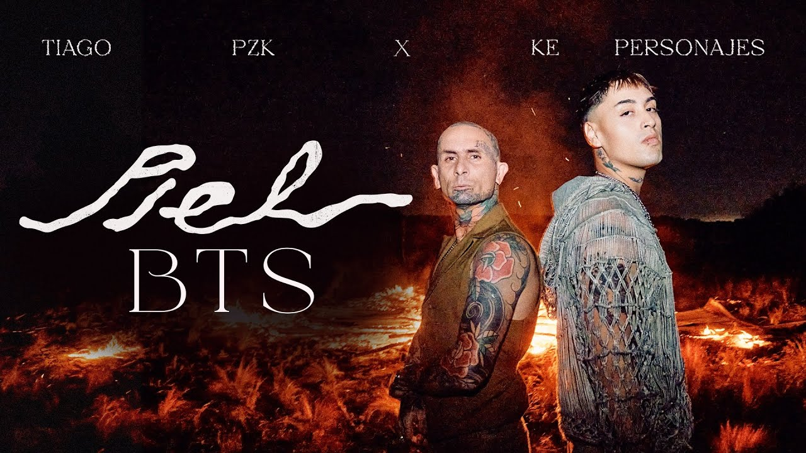

LA CANCIÓN DE LA SEMANA
Esta semana la canción tendencia estuvo muy peleada entre artistas que no paran de sacar "EXITOS" en la escena.
Los artistas argentinos estrenaron su primera colaboración. Este jueves por la noche Tiago PZK y Ke Personajes lanzaron su primera colaboración.
El rapero argentino Tiago PZK y la banda de música tropical Ke Personajes se han unido para crear "Piel", crearon una explosiva colaboración que fusiona los sonidos urbanos con la frescura tropical. El tema, producido por ambos artistas, ya está disponible en todas las plataformas digitales y se convierte en el primer adelanto del segundo disco de Tiago PZK, "Gottia".
La noticia de este estreno la compartía Tiago PZK a través de sus redes sociales, levantando una gran expectativa. La fecha llegó y los resultados no se han hecho esperar pues el video correspondiente de “Piel” registra un movimiento constante en las cifras de vistas en su canal de YouTube, en donde cuenta con 4.44 M de suscriptores, lo que, sin duda, tiene más que complacido al joven talento argentino.
Con una base de oyentes mensuales que supera los 19 millones en Spotify, Tiago PZK comenzó con el pie derecho este 2024 con su participación en la exitosa canción “Una Foto Remix”, junto a Mesita, Emilia y Nicki Nicole, que cuenta con más de 42 millones de reproducciones en YouTube. Siguiendo ahora con el estreno de “Piel” en donde se percibe una combinación de estilos musicales con la que los artistas están sorprendiendo a sus seguidores.
Los sorprendentes números de Ke Personajes En Spotify la cifra es de más de 8 millones de oyentes mensuales con canciones que también superan el millón.